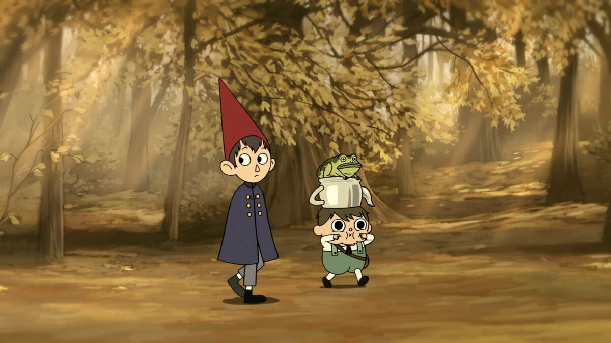
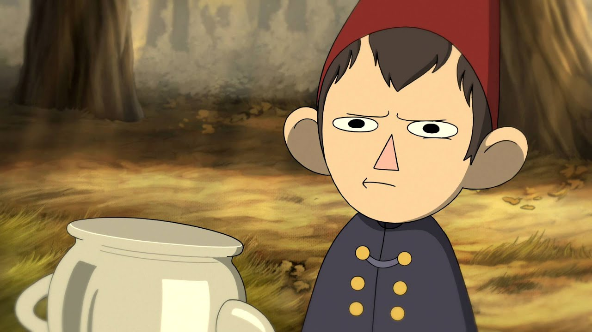
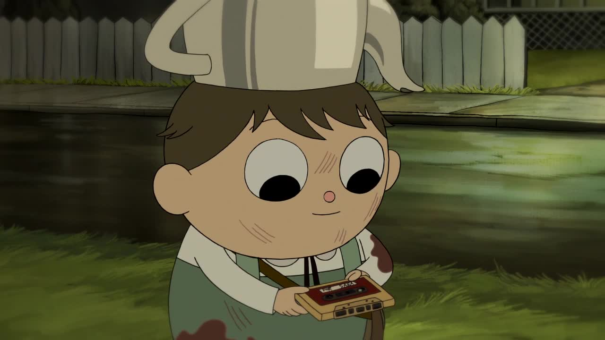
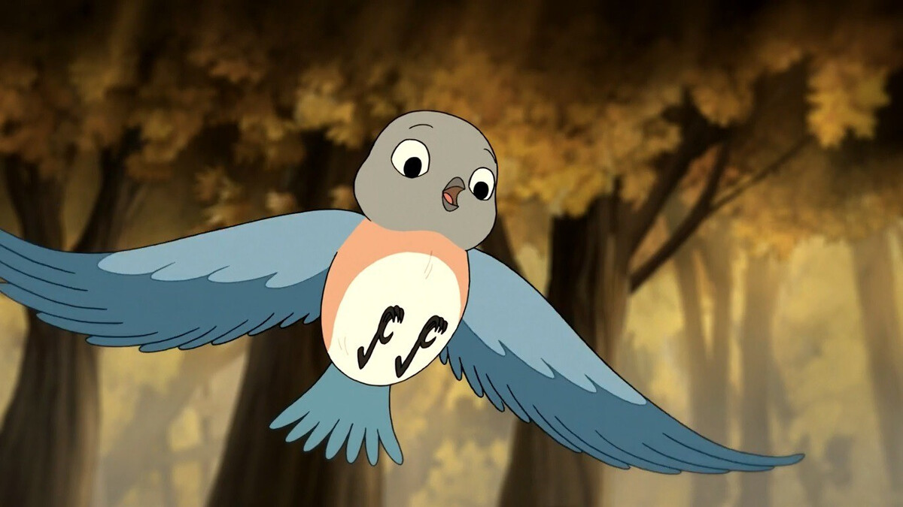
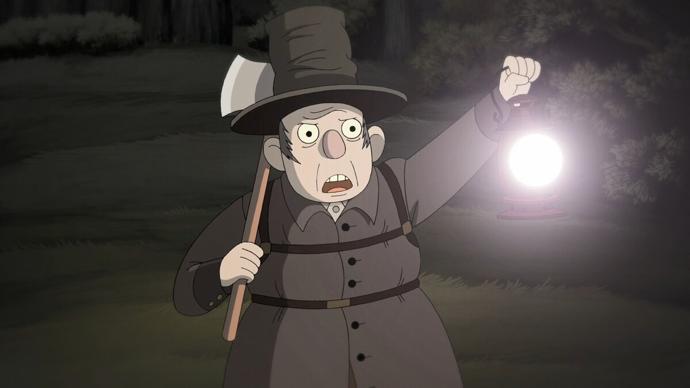
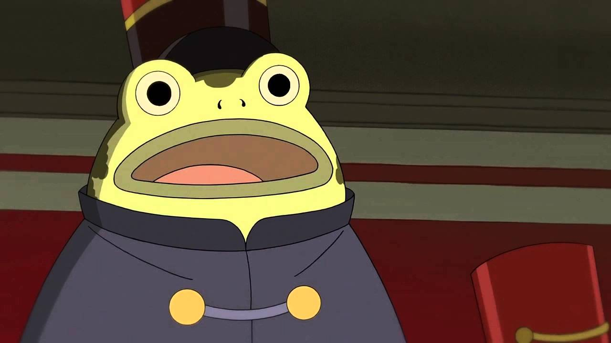
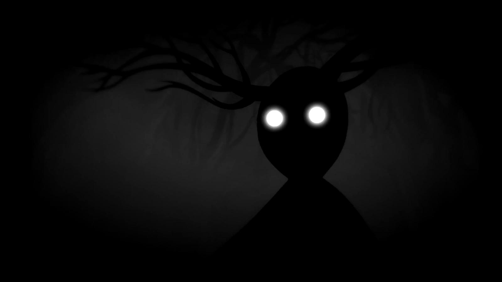
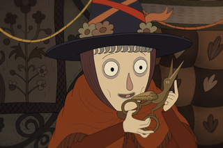

По ту сторону изгороди
«По ту сторону изгороди» (англ. Over the Garden Wall, также известен как «За садовой оградой») — американский анимационный мини-сериал, созданный Патриком Макхэйлом для канала Cartoon Network, премьера которого состоялась 3 ноября 2014 года. Сериал являлся адаптацией анимационной короткометражки Макхэйла, «Книга неизвестности», которая была создана Cartoon Network Studios, как часть инициативы развития анимации короткого метра. В России премьера состоялась в апреле 2015 года.
Сюжет
Главные герои — братья Вирт и Грег (Грегори) ищут путь домой из загадочного леса под названием «Неизведанное», и им в этом помогают старый дровосек и восточная сиалия по имени Беатрис.
Вирт, старший брат, — склонный к беспокойству подросток, который предпочитает держаться в стороне, нежели идти на риск и принимать серьёзные решения. Его привлекает игра на кларнете и написание стихов, которыми он ни с кем не делится из-за страха быть осмеянным за свои чувства. Грег, младший брат, наивен и беззаботен, является полной противоположностью Вирта.
Персонажи
Главные герои
Вирт — старший из братьев. Учится в старшей школе. Одет в красный колпак и синий плащ. Реалист, склонен драматизировать. Занимается музыкой, играет на кларнете и пишет стихи. Застенчив и скрывает свои умения. Молчаливый и обидчивый, но при этом, в некоторых сериях Вирт произносит риторические философские монологи о жизни. Влюблён в девушку Сару, о которой часто думает. Также разбирается в архитектуре.
Грег — единоутробный младший брат Вирта. Озорной и непосредственный ребёнок. Он не видит в лесу ничего плохого и воспринимает его как забавное приключение. Низкий, полноватый. Носит на голове чайник и подобранную в лесу лягушку под мышкой. Хорошо поет и придумывает песни. Оптимист. Часто является причиной неприятностей братьев.
Беатрис — в истинном облике рыжеволосая девушка в голубом платье. Она кинула камнем в сиалию и в наказание была сама превращена в птицу, как и вся её семья. Расколдовать её можно, только обрезав крылья волшебными ножницами.
Второстепенные герои
Дровосек — обманутый Зверем старик. Он постоянно рубит эдельвудовы деревья, чтобы поддержать огонь в лампе с «душой его дочери». Он не знает о том, что эдельвудовы деревья — это люди, заблудившиеся в лесу. Несколько раз помогает братьям.
Лягушка — также известен как Киса, Вирт, Вирт младший, Джордж Вашингтон, Мистер Президент, Бенджамин Франклин, Доктор Огурчик , Грег младший, Шкипер, Рональд, Гэри и Джейсон Фандерберкер — лягушка Грега, которую он нашёл ещё до попадания в Неизведанное. В серии «Колыбельная в стране лягушек» поёт песню, звучащую в заставке первой серии мини-сериала, также он первый и последний персонаж, показанный в нём.
Зверь — главный антагонист сериала. Выглядит как высокий чёрный силуэт человека с длинными ветвистыми рогами. В последней серии, Дровосек случайно освещает фонарем тело зверя, оно состоит из кричащих духов. Зверь заманивает к себе заблудившихся путников и превращает их в деревья. Некоторых заблудших он использует как хранителей фонаря, с помощью обмана он говорит им, что заключит души их умирающих близких в лампу. Убит Дровосеком (тот задул пламя в лампе).
Аделаида — «добрая женщина с пастбища», как называет её Беатрис, обманывая братьев. На самом деле это злая ведьма, предложившая девушке-сиалии сделку: ножницы, сделающие её обратно человеком, в обмен на ребёнка-слугу. Является сестрой тётушки Шёпот. Умирает от соприкосновения со свежим воздухом.
Список серий
- «Старая зерновая мельница» - Братья Вирт и Грег попадают в Неизведанное и знакомятся с Дровосеком, который даёт им представление о том, кто такой Зверь и указывает дорогу домой.
- «Переполох в Поттсфилде» - Братья встречают Беатрис и попадают в деревню, населенную тыквоподобными людьми.
- «Школьные забавы» - Действие серии происходит в школе, в которой обучаются детёныши лесных животных. Вирт, Грег и Беатрис помогают поймать опасную гориллу, бродящую в окрестностях, и найти жениха школьной учительницы.
- «Песни Тёмного Фонаря» - Троица попадает в лесную таверну, где они встречают говорящего коня Фреда.
- «Без ума от любви» - Герои оказываются в особняке чайного магната Куинси Эндикотта, который уверен, что в его доме живет призрак. Вирт, Беатрис и Фред пытаются достать монетки для переправы на пароме.
- «Колыбельная в стране лягушек» - Беатрис, Вирт и Грег плывут на пароходе с лягушками. Лягушонок Грега проявляет свой талант певца. Вирт и Грег узнают, что Беатрис пыталась заманить их в ловушку Аделаиды и покидают её.
- «Звон колокольчика» - Вирт и Грег забредают в дом, в котором живут молодая девушка Лорна и её тётя, ведьма Шёпот. Братья едва ли не становятся жертвами демона, живущего в теле Лорны, но изгоняют его.
- «Дети в лесу» - Окончательно заблудившись, Грег и Вирт ложатся переночевать под деревом. Грегу снится сон, в котором он попадает на небеса и спасает жителей Облачного Города. Взамен фея исполняет его желание, которое судя по всему заключается в том, чтобы дать ослабшему Вирту выбраться из Неизведанного живым ценой жизни Грега, который переходит во власть Зверя.
- «На пути в Неизведанное» - Серия рассказывает о жизни братьев до попадания в Неизведанное. В ночь Хэллоуина Вирт хочет передать кассету с песнями Саре (девушке, в которую он влюблён), но сомневается, стоит ли это делать. Его планы рушит Грег, ставя его в глупое положение. Братья убегают с кладбища, где собрались остальные подростки, и во время побега падают в реку.
- «Неизведанное» - Вирт и Беатрис находят Грега умирающим в плену Зверя. Зверь предлагает Вирту стать новым Дровосеком — рубить эдельвудовы деревья в обмен на поддержание жизни его брата, душу которого Зверь заключит в фонарь. Однако Вирт догадывается, что в фонаре заключена на самом деле душа Зверя, о чём и говорит Дровосеку. Дровосек задувает фонарь, убивая Зверя, Вирт отдает Беатрис ножницы, которые нужны ей для превращения в человека, забирает Грега и покидает Неизведанное
Производство
«Книга неизвестности»
«По ту сторону изгороди» был создан Патриком Макхэйлом, бывшим раскадровщиком «Удивительных злоключений Флэпджека» и креативным директором «Времени приключений». Сериал является адаптацией анимационной короткометражки Макхэйла «Книга неизвестности» (2013), которая была создана Cartoon Network Studios как часть инициативы развития анимации короткого метра.
Эта короткометражка была показана на международном кинофестивале в Санта Барбаре в 2014 году и принесла Макхэйлу награду Брюса Коруина за лучшую анимацию в секции короткометражных фильмов. Также она получила почётное упоминание на международном анимационном кинофестивале в Оттаве в 2013 году, а чуть ранее она была показана на кинофестивале короткометражек в Лос-Анджелесе 2013.
Разработка
Проект стал первым мини-сериалом канала, заказавшего 10-серийный сезон с премьерой на осень 2014 года. «По ту сторону изгороди» содержит оригинальный саундтрек, вдохновлённый музыкой американа. Элайджа Вуд снова озвучил одну из главных ролей, Вирта, из оригинальной короткометражки. Сериал вышел с рейтингом TV-PG.
В интервью в октябре 2014, Макхэйл заявил, что придерживался жанра «комедийной фантастики», он и его команда пытались сохранить баланс с другими эпизодами, сохранить их лёгкими и смешными. В том же интервью Макхэйл описывает свои источники вдохновения для шоу, включающие детскую литературу 19 века, американскую музыку начала 20-го, а также отметил сына, ставшего в какой-то степени прототипом Грега.